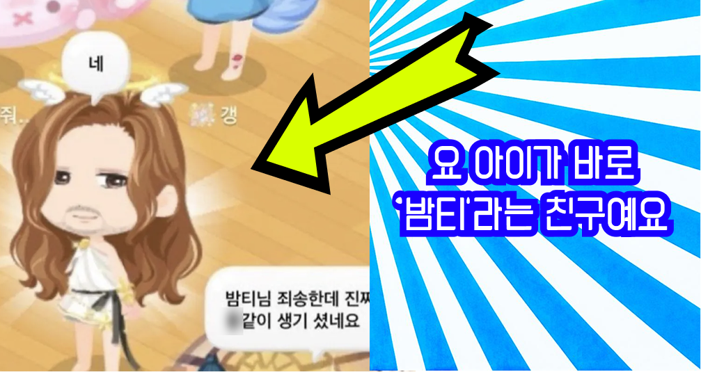
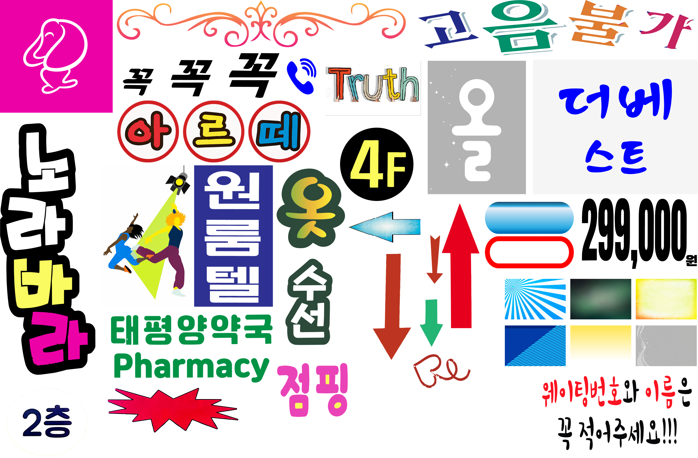

Bamtify
Everything..


우리가 ‘못생겼다’고 느끼는 디자인에는 사실 특정한 조형적 문법이 있다. 그리고 그 문법은 제도권 디자인 교육에서 배운 좋은 디자인의 규칙을 모조리 어겼음에도 불구하고, 나름의 생명력과 해방감을 가지고 있다.
‘밤티’는 최근 Z세대 사이에서 SNS를 중심으로 유행하는 신조어로, 주로 ‘못생겼다’, ‘촌스럽다’, ‘어색하다’는 의미를 담아 상대를 장난스럽게 비하할 때 쓰는 표현이다.
세련됨의 규범 바깥에 놓인 이른바 ‘밤티 디자인’들은 대개 제각기 다른 조건 속에서 만들어진다. 눈에 띄어야 해서, 더 많은 정보를 넣어야 해서, 빠르게 수정되어야 해서, 혹은 전문적인 디자인 도구와 교육의 바깥에서 만들어졌기 때문에. 그러나 그 결과물들은 단순히 '밤티 디자인'이라는 말로 일축하기에는 아쉬운 감각을 품고 있다. 정제된 디자인 결과물에서는 보기 어려운 과잉, 충돌, 어긋남, 그리고 이상한 생동감이 그 안에 있다.
시각디자인을 배우는 과정은 ‘좋은 디자인’을 판단하는 기준을 익히는 일이기도 하다. 정돈된 그리드, 절제된 색상, 적절한 여백, 명확한 위계, 세련된 타이포그래피. 물론 이러한 배움은 필요하다. 그러나 동시에 나는 그 기준을 익혀갈수록 어떤 이미지들을 너무 쉽게 멀리하고, 낮게 평가하고, 부끄러운 것으로 여기게 되었다. 이 작업은 그동안 내면화해온 미감과 판단 기준을 잠시 내려놓고, 내가 ‘구리다’고 느껴온 이미지들을 다시 들여다보는 데서 출발한다.
밤티 디자인의 무질서는 나에게 기분 좋은 충격이자 해방으로 다가왔다. 무분별한 가운데 정렬, 지나치게 많은 서체와 색상, 맥락 없이 삽입된 그림자와 외곽선, 별, 하트, 물결표, 비어 있는 곳을 참지 못하는 정보의 밀도. 이 작업은 그러한 무질서를 조롱하거나 교정하는 대신, 그 안에서 작동하는 조형적 문법을 확인하고, 도입하고자 한다.
1. 기록과 수집.
일상적 공간을 거닐며 순간적으로 ‘못생겼다’, ‘구리다’, 혹은 ‘밤티스럽다’고 느껴지는 시각 이미지들을 포착했다. 이때 수집의 기준은 단순한 불쾌감이 아니라, 어딘가 이상하지만 눈길을 끌고, 실소나 흥미를 자아내는 이미지들이다.
2. 조형적 추출.
수집된 이미지들에서 밤티 특유의 어색함과 투박함을 만들어내는 요소들을 분리한다. 서체, 색상 조합, 정렬 방식, 효과, 이미지 처리, 정보 위계 등을 분석하며 밤티 디자인을 하나의 시각 언어로 유형화한다. 이를 통해 ‘못생김’으로 뭉뚱그려졌던 인상을 구체적인 조형 요소로 다시 읽어낸다.
3. '밤티파이(Bamtify)'
수집과 추출을 통해 얻은 밤티의 조형 언어를 정제된 하이엔드 디자인 위에 역으로 풀어놓는다. 절제, 여백, 위계, 일관성처럼 좋은 디자인을 위해 배워온 규칙들을 잠시 넣어두고, 그 자리에 과잉, 충돌, 어긋남, 맥락 없는 효과들을 밀어 넣는다. 이 과정은 시각디자인을 배우며 내면화한 미감의 기준을 가볍게 배신해보는 실험이다. 밤티파이를 통해, ‘못생긴 디자인’은 벗어나야 할 실패가 아니라, 이미지를 다르게 만들고 읽게 하는 가능성으로 다시 작동한다.
홍익대학교 시각디자인과가 있는 홍문관 7층을 밤티파이해보자.